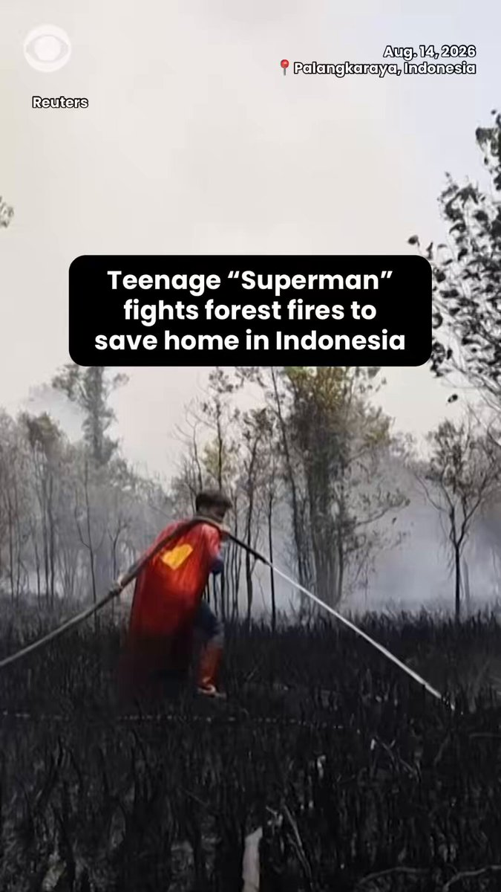

@CBSNews
📝 原文: Tropical Storm Lala brings drenching rain, wind across the Hawaiian Islands
🇨🇳 译文: 热带风暴拉拉给夏威夷群岛带来大雨和大风

🕒 2026-08-16T23:45:00+00:00
| 来源 | 旧窗口内数量 | 本次新增 | 本次淘汰 | 当前窗口内共有 |
|---|---|---|---|---|
| 推文 + Dawn 新闻 | 0 | 13 | 0 | 13 |
| ARY News | 0 | 0 | 0 | 0 |
注：淘汰数 = 旧窗口内数量 + 本次新增 - 当前窗口内共有



暂无文章。